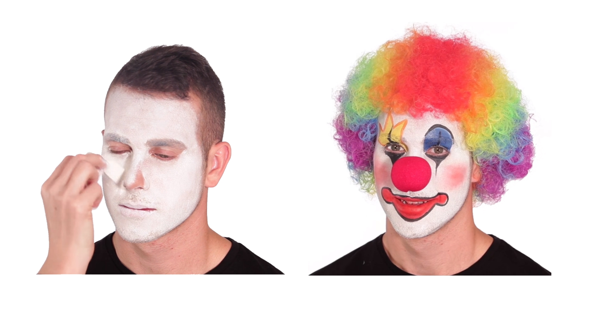
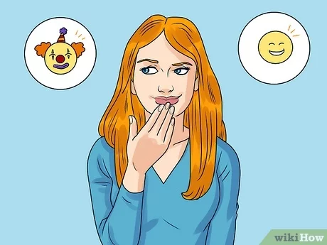
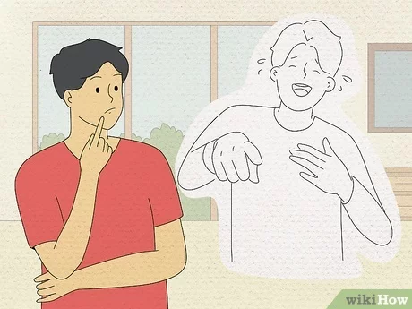
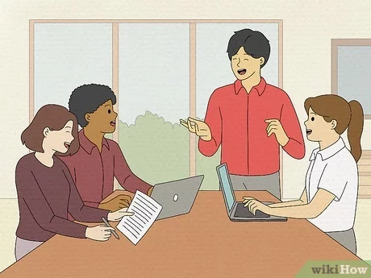
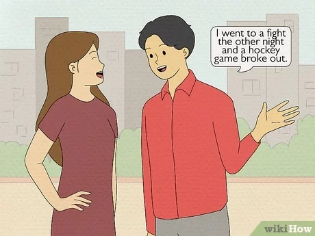
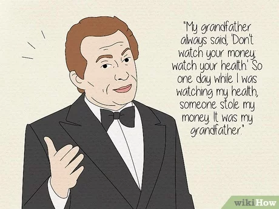
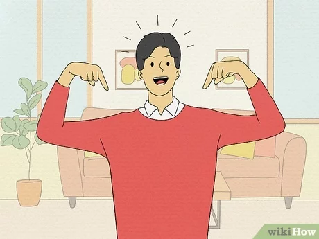

Humor can help you connect with other people and make unpleasant situations a little more bearable.
Being funny might seem like it takes a lot of work, but it's not that hard once you tap into your inner
sense of humor. Even if you don’t think you’re naturally funny, there are things you can do to make yourself
and other people laugh.

Clown
Remember, as the group facilitator you will be setting the tone of the group. If the environment is stuffy and dogmatic,
little laughter and divergent thinking will occur. However, if you can make the environment comfortable, flexible, and supportive,
the group will cultivate a sense of humor along with a positive learning environment.
Is it necessary to go to comedy school? No, being relaxed, smiling and alert to student needs are good starts to a better sense
of humor. The integration of humor into a group session can be a slow process that requires trial and error. Try out jokes and
stories ahead of time on family and peers to make sure they are humorous and non-insulting. A “Don Rickles” approach to humor
would not be particularly productive for a group environment. Positive humor is evident when groups develop their own identification
through nicknames, group history or ongoing gags.
Developing a Sense of Humor

brainstorming
Learn a little about what makes you laugh. Laughter itself is unconscious. While we can keep ourselves from laughing (not always successfully),
it is very hard for us to produce laughter on demand, and doing so will usually seem "forced". Fortunately, laughter is very contagious (we're
about 30 times more likely to laugh in the presence of others), and in a social context, it's easy to start laughing when others are laughing.
Studies have shown that three things make us laugh the most: a sense of superiority over someone else behaving "dumber" than us; a difference
between our expectation of something and the actual result; or welcome relief from an anxiety.
Learn a little about what makes you laugh.

What make you laugh?
Learn a little about what makes you laugh. Laughter itself is unconscious. While we can keep ourselves from laughing (not always successfully),
it is very hard for us to produce laughter on demand, and doing so will usually seem "forced". Fortunately, laughter is very contagious (we're
about 30 times more likely to laugh in the presence of others), and in a social context, it's easy to start laughing when others are laughing.
Studies have shown that three things make us laugh the most: a sense of superiority over someone else behaving "dumber" than us; a difference
between our expectation of something and the actual result; or welcome relief from an anxiety.
Learn to laugh in boring or unfunny circumstances.

Just in time
It's good to know that the less funny a place is, the easier it becomes to add the element of humorous surprise. It might be easier to get people
to laugh in an office workplace than to get people to laugh in a comedy club.
This is why The Office, originally a BBC 2 show that was remade by NBC, uses an office as its setting: it's about as boring as it gets. They even
process paper. How boring is that?! We're not used to looking at an office as a funny place, so when it is funny, it's especially funny.
Learn to appreciate witty wordplay and puns.

Workplay and Puns
A lot of the time, comedy comes from linguistic confusion (unintentional) or linguistic playfulness (intentional). We sometimes find things humorous
when there's a gap between our words and our meanings
Freudian slips are linguistic errors that are believed to expose what you were really thinking rather than what you "meant" to say, and are often sexual.
Witty wordplay is more intentional: "A chicken crossing the road: poultry in motion." Or this one, where the words "hockey" and "fight" are switched:
"I went to a fight the other night and a hockey game broke out."
Appreciate irony.

Irony humor
There's perhaps nothing in comedy more widely cited but more thoroughly misunderstood than irony. Irony occurs when there is a gap between our expectations
of a statement, situation, or image and the actual experience of it.
Comedian Jackie Mason illustrates irony with a joke: "My grandfather always said, 'Don't watch your money; watch your health.' So one day while I was watching
my health, someone stole my money. It was my grandfather."
This joke messes with one of our fundamental expectations: that grandparents are nice, friendly people who are utterly harmless, and that the advice they offer
should be sincere.
Trust in your inner sense of humor.

Trust yourself
Being funny doesn't come in a "one-size-fits-all" package. What makes you funny is unique to you and the way you observe the world. Trust that you do have a funny
bone; as babies, we laugh from four months of age, and all children express humor naturally from kindergarten age, using humor to entertain themselves and others.
It's already in you – you just need to bring it out!